Pourquoi l'etude de marche arrive maintenant
On entre dans l'acte 2 : on ne parle plus seulement d'outils, on construit le business.
Avant le site, le blog, LinkedIn ou la prospection, il faut savoir a qui tu parles, ce que les autres vendent et ou sont les opportunites. Sinon tu construis un joli systeme dans le vide.
01 / Faire
Prends cette seance comme la fondation : tout ce que tu crees ensuite doit sortir de cette analyse.
02 / Controler
Tu sais expliquer ton marche, tes concurrents, ta cible, tes prix et tes angles.
03 / Eviter
Ne saute pas cette etape parce que tu veux vite faire le site. Le site sans marche clair devient une vitrine vague.
La promesse de la seance
A la fin, tu repars avec trois livrables exploitables, pas avec une simple liste d'idees.
La video montre un vrai parcours : Claude in Chrome cherche, lit, compare, extrait et compile. Le resultat devient une base de travail que tu peux mettre dans ton QG Cowork.
Vise trois fichiers : etude-marche.md, etude-marche.xlsx, etude-marche.html.
Les trois fichiers existent et racontent la meme histoire sous trois formats differents.
Ne garde pas seulement le HTML joli. Le .md reste la source de verite pour retravailler l'etude.
Le tableau des 50 concurrents
Signal
La premiere grosse brique est simple : savoir qui vend deja quelque chose sur ton terrain.
Histoire
Claude doit identifier des concurrents, visiter leurs pages, lire leurs offres, reperer les prix, les avis, les forces, les faiblesses et les signaux LinkedIn. Tu ne veux pas un avis general : tu veux une base comparative.
01 / Faire
Demande des colonnes utiles : nom, URL, services, prix, avis, forces, faiblesses, dangerosite.
02 / Controler
Tu peux trier les concurrents par dangerosite ou par opportunite.
03 / Eviter
Ne te contente pas des trois premiers resultats Google. Ils donnent une impression, pas une cartographie.
Comprendre ce que les gens cherchent vraiment
Une etude de marche ne sert pas seulement a regarder l'offre. Elle sert aussi a comprendre la demande.
Dans la seance, l'analyse passe par les mots-cles, les questions Google, les forums, Reddit et LinkedIn. Le but est de trouver les phrases que les clients utilisent vraiment.
01 / Faire
Recupere les mots-cles, les questions recurrentes, les sujets qui engagent et les problemes qui reviennent.
02 / Controler
Tu peux deja voir les futurs articles de blog, posts LinkedIn et messages de prospection.
03 / Eviter
Ne transforme pas tes propres intuitions en verite marche. Verifie-les dans Chrome.
Malt, ComeUp, Codeur et les plateformes donnent une idee concrete du marche.
Note les TJM, les offres, les notes, le nombre de missions et ce qui manque dans les profils.
Noeud central
Benchmark freelance : les vrais prix
Tu connais les prix bas, les prix moyens et les prix premium.
Ne copie pas le prix le plus bas. Le prix doit etre relie a la valeur creee, pas a la peur de vendre.
Dans la video, Claude teste Malt en direct et calcule un TJM moyen sur les premiers profils visibles. Ce n'est pas parfait, mais c'est suffisant pour comprendre une fourchette.
Le profil client ideal
La cible n'est pas une ligne abstraite. C'est un decideur avec un quotidien, des urgences et un budget.
Ce qui se passe dans la video
La seance insiste sur le fait qu'on doit savoir qui signe : gerant, associe, directeur, responsable operationnel. Une offre IA ne se vend pas a une entreprise vague, elle se vend a une personne precise.
01 / Faire
Definis secteur, taille, decideur, douleur, budget, ou le trouver et ce qui le convainc.
02 / Controler
Tu peux ecrire un message LinkedIn qui parle a une vraie personne.
03 / Eviter
Ne dis pas 'PME France'. C'est trop large pour guider un site, un post ou un call.
Chercher les trous du marche
Le moment strategique de la seance : trouver ce que personne ne vend bien.
Carnet de terrain
Le marche IA se remplit vite. Donc tu dois chercher les angles ignores : un secteur mal adresse, une promesse mal formulee, un livrable absent, un prix pas clair, un besoin client non traite.
Liste au moins 15 trous, puis verifie chacun dans Chrome avec plusieurs resultats Google.
Un trou est valide seulement si tu l'as verifie, pas parce qu'il parait malin.
Ne confonds pas 'personne ne fait exactement mon idee' avec 'il y a une demande solvable'.
Le positionnement final
Toutes les donnees doivent finir dans une phrase simple : ce que tu fais, pour qui, avec quel resultat.
Une fois les concurrents, la demande, les plateformes et les trous analyses, Claude peut proposer un positionnement plus solide. Ce n'est pas une phrase marketing sortie de nulle part.
Demande une phrase de positionnement, trois differenciateurs, une offre d'entree, une offre premium et un plan d'action.
Tu peux expliquer pourquoi ton angle est defendable.
Ne choisis pas le positionnement le plus joli. Choisis celui qui se vend et qui se prouve.
Pourquoi les trois fichiers sont importants
Signal
Chaque livrable a un usage different.
Histoire
Le .md garde le raisonnement et les donnees. Le .xlsx permet de filtrer, comparer et corriger. Le .html sert a visualiser et presenter. Ensemble, ils deviennent une base reutilisable.
01 / Faire
Range les trois fichiers dans ton QG, pas dans un dossier perdu sur le bureau.
02 / Controler
Tu peux retrouver les donnees pendant les seances suivantes.
03 / Eviter
Ne laisse pas Claude produire un livrable que tu ne relis pas. La valeur vient aussi de ta verification.
Le fil rouge de la demo
La video n'est pas coupee : on voit les essais, les attentes, les corrections et les ameliorations.
C'est volontaire. Le but est de comprendre la methode reelle, pas de croire qu'un prompt sort toujours un resultat parfait. Tu vas lancer, regarder, corriger, relancer et enrichir.
01 / Faire
Garde cette boucle en tete : comprendre, lancer, verifier, ajuster, ameliorer.
02 / Controler
Tu n'es pas bloque quand le premier resultat est imparfait.
03 / Eviter
Ne cherche pas le prompt parfait. Cherche le systeme qui progresse.
Installer l'extension officielle
La seance commence par le Chrome Web Store.
Tu cherches Claude dans le Chrome Web Store et tu choisis l'extension officielle d'Anthropic. C'est elle qui permet a Claude de travailler dans ton vrai navigateur.
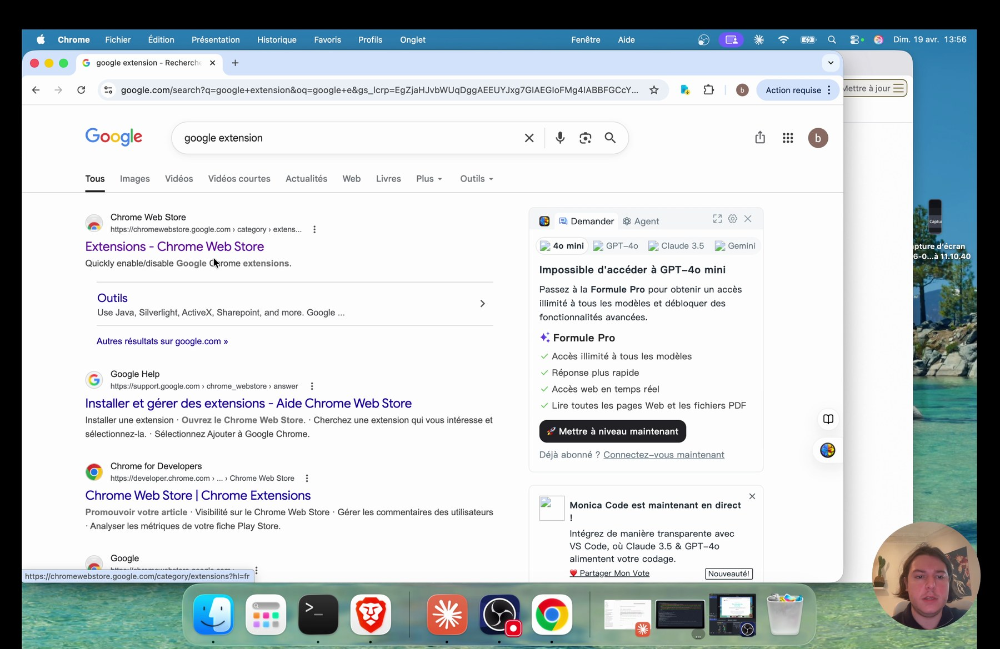
01 / Faire
Ouvre Chrome, cherche Claude, puis verifie l'editeur avant d'installer.
02 / Controler
Tu vois bien l'extension Claude dans le Web Store.
03 / Eviter
Ne prends pas une extension clone ou non officielle.
Ajouter l'extension a Chrome
L'installation est classique : ajouter a Chrome, puis confirmer.
Pourquoi cette capture compte
Chrome affiche les permissions. Elles peuvent paraitre fortes, parce que l'extension doit lire les pages, agir dans les onglets et communiquer avec Claude.
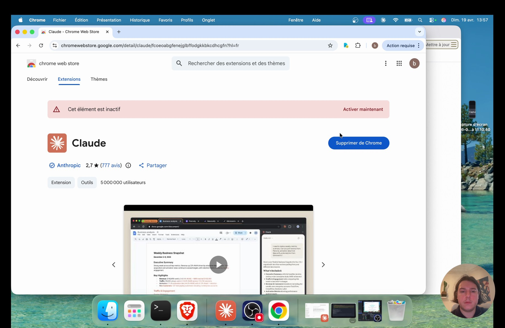
01 / Faire
Lis les permissions, puis clique sur ajouter l'extension si tu es d'accord.
02 / Controler
L'icone Claude apparait dans la barre des extensions.
03 / Eviter
Ne valide jamais une extension sans verifier l'editeur.
Comprendre les permissions
La fenetre d'installation liste ce que Claude peut faire.
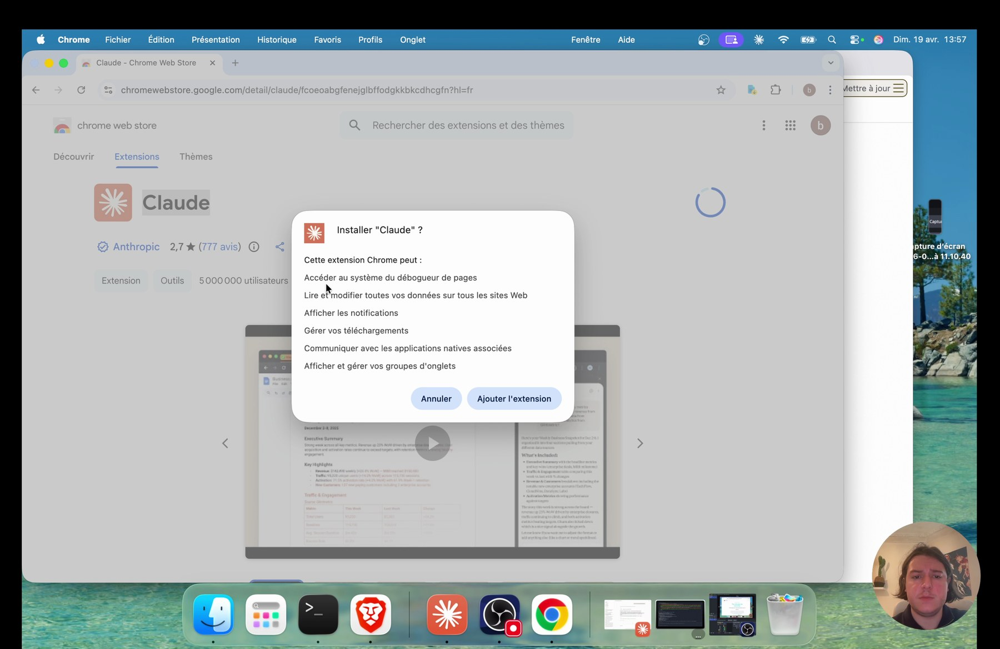
Lecture
Dans la video, on voit que l'extension peut lire et modifier des donnees, gerer des telechargements, communiquer avec des applications natives et afficher des notifications. C'est puissant, donc il faut comprendre ce que tu actives.
A faire
Installe l'extension uniquement dans le navigateur que tu veux utiliser pour cette formation.
Controle
Tu sais pourquoi ces permissions existent.
Erreur
N'utilise pas ce navigateur sur des sites sensibles pendant les demos.
Autoriser la connexion au compte Claude
Apres l'installation, Claude demande l'autorisation de se connecter a ton compte.
Pourquoi cette capture compte
Cette etape relie l'extension a ton compte Claude. Elle permet d'utiliser tes informations de profil et ton forfait. Sans ca, le panneau lateral ne fonctionne pas correctement.
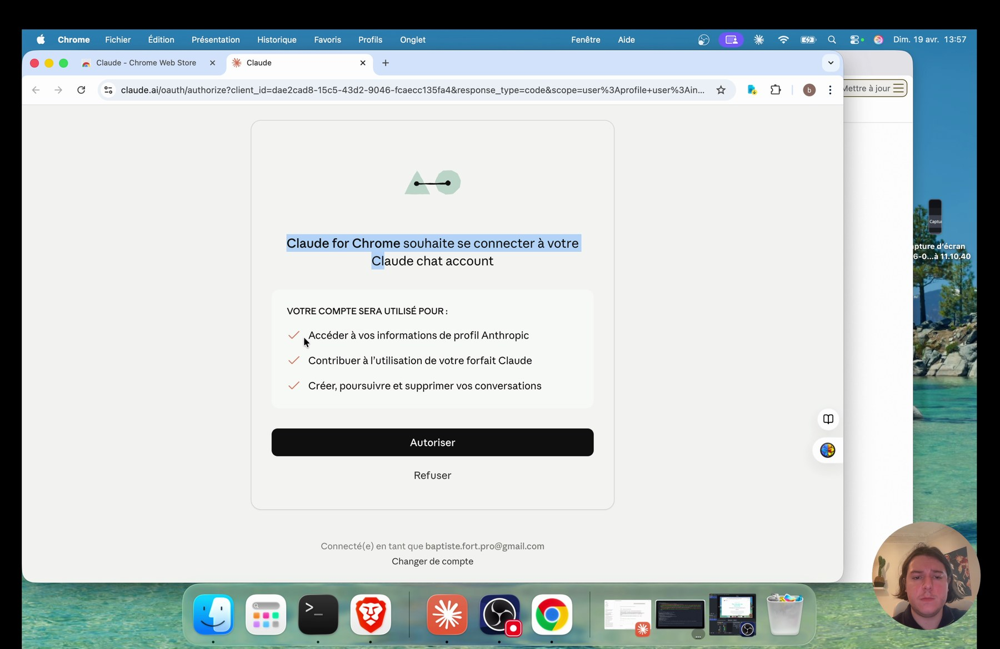
01 / Faire
Clique sur autoriser avec le bon compte.
02 / Controler
Le compte affiche en bas correspond bien au tien.
03 / Eviter
Ne connecte pas un compte perso si tu veux travailler dans un environnement pro separe.
Accepter le panneau beta avec prudence
L'extension est presentee comme une fonctionnalite beta.
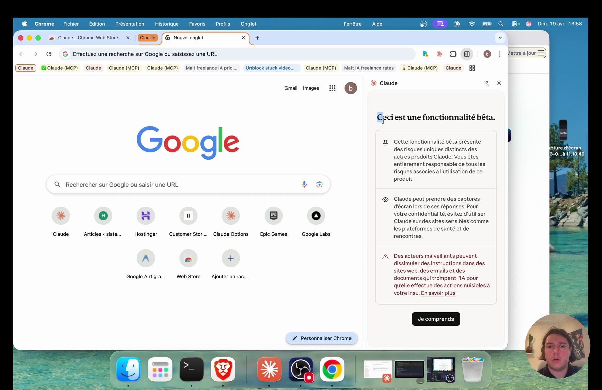
Lecture
La video insiste : c'est deja tres puissant, mais il faut rester conscient des risques. Claude peut prendre des captures pendant ses reponses et lire ce que le navigateur montre.
A faire
Lis l'avertissement et clique sur Je comprends seulement si le contexte est bon.
Controle
Tu sais quelles pages sont ouvertes avant d'utiliser l'extension.
Erreur
Ne lance pas Claude in Chrome avec des informations sensibles ouvertes.
Passer l'onboarding des raccourcis
Claude presente les raccourcis, mais ce n'est pas le coeur de cette seance.
Pourquoi cette capture compte
Les raccourcis peuvent servir plus tard pour des instructions frequentes. Ici, le but est surtout de connecter Chrome a Claude Code, pas de creer une bibliotheque de raccourcis.
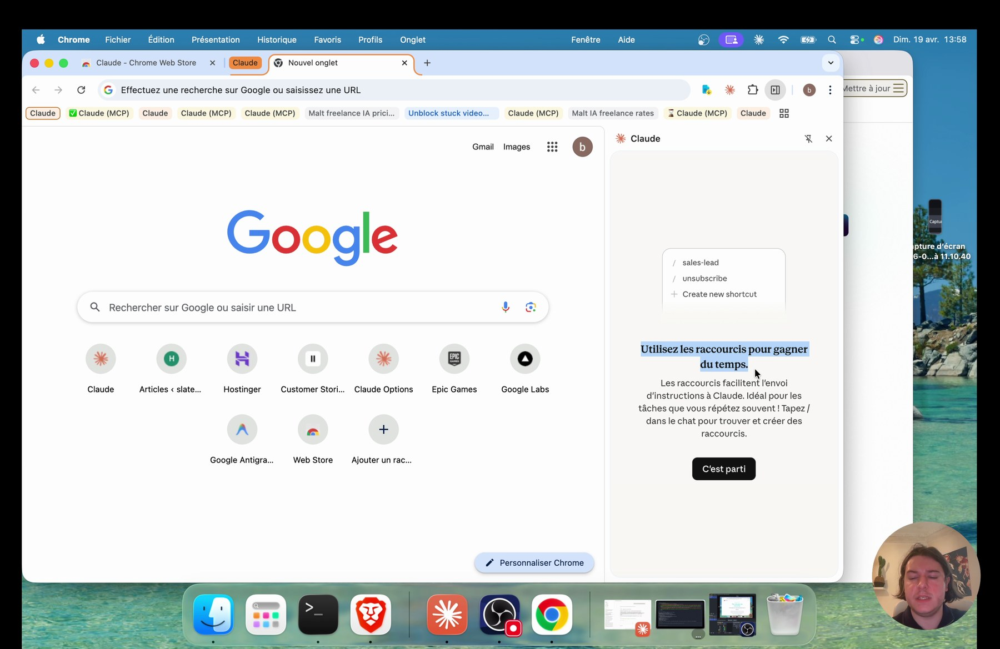
01 / Faire
Clique sur C'est parti pour arriver dans l'interface.
02 / Controler
Tu vois l'interface Claude dans le panneau lateral.
03 / Eviter
Ne te perds pas dans les options secondaires avant d'avoir teste le flux principal.
Choisir le modele
Le panneau permet de choisir le modele Claude.
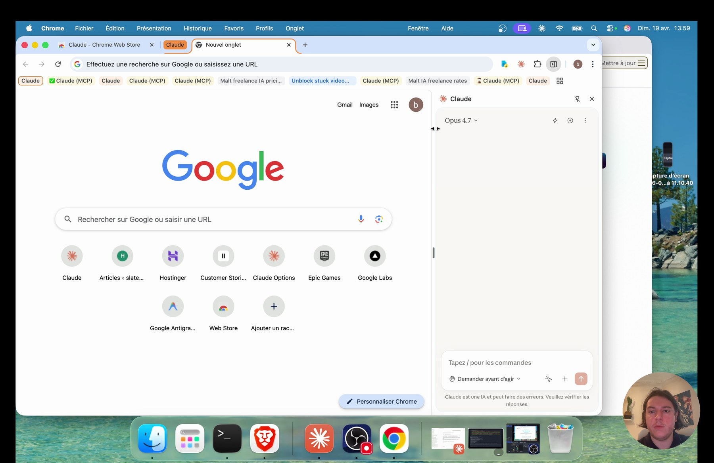
Lecture
Dans la video, le formateur selectionne le modele le plus capable disponible. Pour une etude longue, plus le modele est fort, mieux il tient le raisonnement, les consignes et la generation de livrables.
A faire
Prends le meilleur modele auquel ton abonnement donne acces.
Controle
Le modele affiche correspond au choix voulu.
Erreur
Ne lance pas une etude de 70 minutes avec un modele trop limite si tu peux l'eviter.
Demander avant d'agir ou agir sans demander
Tu peux choisir le niveau d'autonomie.
Pourquoi cette capture compte
Le mode Demander avant d'agir est plus prudent. Le mode Agir sans demander est plus rapide. Dans la demo, le formateur choisit la vitesse pour gagner du temps.
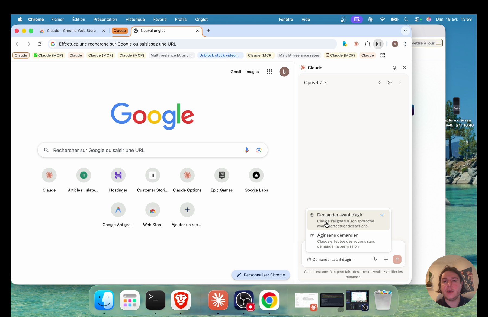
01 / Faire
Pour apprendre, commence prudent. Pour une etude encadree, tu peux passer en autonomie.
02 / Controler
Tu sais changer le mode si Claude agit trop vite.
03 / Eviter
Ne confonds pas autonomie et absence de controle. Tu restes responsable du resultat.
Premier test dans le panneau Claude
Avant Claude Code, on teste directement dans Chrome.
La demande simple : aller sur Malt et trouver le TJM moyen d'un expert IA. Claude navigue, lit les profils visibles et calcule une moyenne.
Va sur Malt et trouve le TJM moyen pour un expert IA.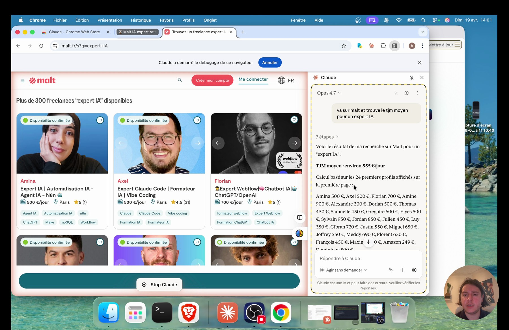
01 / Faire
Teste une demande courte avant de lancer l'etude complete.
02 / Controler
Claude ouvre le bon site et revient avec un resultat exploitable.
03 / Eviter
Ne commence pas par le gros prompt si la connexion Chrome n'a pas ete testee.
Ce que le test Malt prouve
Le test montre la difference entre une reponse IA classique et une navigation reelle.
Claude ne se contente pas d'imaginer un tarif. Il ouvre la page, regarde les profils, lit les prix visibles et calcule sur une base concrete. C'est exactement ce qu'on veut pour l'etude de marche.
Note aussi les limites : sans compte Malt, certaines pages restent bloquees.
Tu comprends ce que l'extension sait faire et ce qu'elle ne voit pas.
Ne prends pas les 24 premiers profils comme une verite definitive. C'est un test, pas toute l'etude.
Pourquoi connecter Chrome a Claude Code
Le panneau Claude est utile, mais la vraie seance se passe dans Claude Code.
Claude Code sait creer des fichiers, gerer un dossier, ecrire un .md, generer un .xlsx, coder un HTML et orchestrer plusieurs etapes. L'extension Chrome lui donne les yeux et les mains dans le navigateur.
Support technique
Lis le geste avant de le reproduire.
Ce bloc garde le cote terrain : ce que tu observes, ce que tu fais, ce que tu verifies, puis le piege a eviter.
01 / Faire
Tu vas travailler depuis le dossier de ton QG ou de ton projet.
02 / Controler
Le terminal, Chrome et le dossier local fonctionnent ensemble.
03 / Eviter
Ne fais pas toute l'etude dans le panneau lateral si tu veux des livrables propres.
Lancer Claude Code avec Chrome
La commande change legerement.
Au lieu de lancer Claude Code seul, tu ajoutes le flag Chrome. Cela prepare la connexion avec l'extension et rend possible l'appel /chrome.
claude --chrome
01 / Faire
Ouvre un terminal dans le bon dossier, puis lance la commande.
02 / Controler
Claude Code s'ouvre dans le dossier attendu.
03 / Eviter
Ne lance pas la commande depuis un dossier aleatoire, sinon les fichiers seront ranges au mauvais endroit.
Utiliser /chrome dans le prompt
Le slash Chrome indique a Claude Code qu'il doit passer par le navigateur.
Dans la demo, le formateur ajoute /chrome a la demande. Sans ca, Claude peut repondre avec ses outils habituels et tu ne verras pas Chrome bouger.
Va sur Malt et trouve le TJM moyen pour un expert IA /chrome01 / Faire
Ajoute /chrome a la fin de la demande quand tu veux une action visible dans Chrome.
02 / Controler
Claude Code appelle bien l'outil Chrome.
03 / Eviter
Ne mets pas /chrome seul si tu veux lancer une action : donne d'abord la mission.
Connecter la bonne extension
Si plusieurs extensions ou profils Chrome sont connectes, Claude Code te demande de choisir.
Pourquoi cette capture compte
La video montre une demande de connexion. Tu dois retourner dans Chrome, nommer la session et connecter le navigateur voulu.
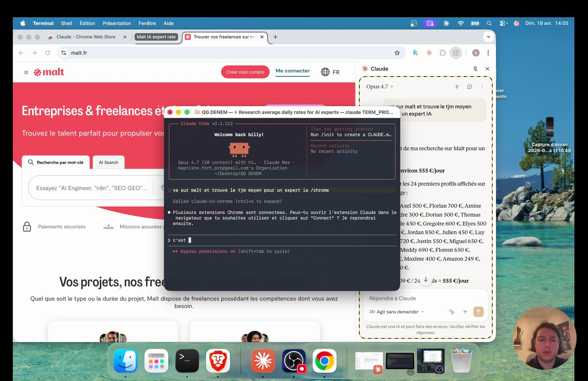
01 / Faire
Donne un nom clair comme DENEM - etude marche.
02 / Controler
Le terminal confirme que Chrome est connecte.
03 / Eviter
Ne connecte pas le mauvais profil Chrome si plusieurs comptes sont ouverts.
Regarder Claude raisonner en direct
Une fois connecte, Claude Code peut naviguer et afficher ses etapes.
Carnet de terrain
Tu vois les onglets s'ouvrir, les recherches se lancer, les pages se charger et le terminal decrire ce qu'il fait. Cette visibilite aide a verifier qu'il ne part pas dans une mauvaise direction.
Garde Chrome visible pendant les premieres minutes.
La recherche correspond vraiment a ta demande.
Ne pars pas tout de suite boire un cafe si c'est la premiere fois que tu lances ce flux.
Ce que Chrome peut faire
Le support liste plusieurs capacites utiles.
Claude peut naviguer, chercher sur Google, lire des avis, extraire des donnees, acceder aux comptes connectes, prendre des captures et enregistrer des traces visuelles.
Utilise Chrome pour les sites dynamiques, les plateformes et les recherches visuelles.
Les donnees extraites viennent bien de pages consultees.
Ne demande pas a Chrome de contourner un site bloque ou un captcha.
Ce que Chrome ne doit pas faire
Signal
Certaines limites sont normales.
Histoire
Captchas, blocages anti-bot, logins obligatoires, LinkedIn trop agressif : le bon comportement est de noter le probleme, passer au suivant et revenir plus tard si necessaire.
01 / Faire
Prevois une ligne donnees partielles dans le fichier quand une source bloque.
02 / Controler
L'etude continue malgre les blocages.
03 / Eviter
Ne force pas dix fois une page qui bloque : tu perds du temps et tu augmentes le risque.
Travailler avec tes comptes connectes
Plus tu connectes proprement tes comptes, plus Chrome voit de donnees.
Malt, LinkedIn, Google ou d'autres plateformes peuvent montrer davantage d'informations quand tu es connecte. Claude partage ce que ton navigateur voit, pas ce qui est cache.
01 / Faire
Connecte-toi avant de lancer l'etude si tu veux une analyse plus profonde.
02 / Controler
Les pages necessaires sont accessibles manuellement avant de lancer Claude.
03 / Eviter
Ne donne pas acces a un compte si tu n'es pas a l'aise avec ce que l'extension peut lire.
Le test court sert de diagnostic.
Fais un test sur Google ou Malt avant le prompt final.
Noeud central
Tester avant de passer au gros prompt
Tu obtiens un resultat simple en moins de quelques minutes.
Ne confonds pas un bug de connexion avec un probleme de prompt.
Si Malt fonctionne, si Chrome bouge, si le terminal decrit les etapes, tu peux passer a l'etude. Sinon, corrige l'installation avant de perdre une heure.
Le bon etat d'esprit
Tu pilotes, Claude execute.
Ce qui se passe dans la video
La video montre un binome : tu donnes la direction, Claude fait le travail lourd, puis tu verifies. Ce n'est pas un robot magique qu'on laisse produire n'importe quoi.
01 / Faire
Lis les premieres sorties et corrige vite si la direction est mauvaise.
02 / Controler
Tu sais quand intervenir et quand laisser tourner.
03 / Eviter
Ne micro-manage pas chaque clic si les consignes sont claires.
Pourquoi remplir les 18 variables
Les variables transforment un prompt generique en etude personnalisee.
Plus le contexte est precis, plus Claude peut chercher les bons concurrents, evaluer les bons prix et proposer un positionnement coherent. Si le contexte est vague, le resultat sera vague.
Support technique
Lis le geste avant de le reproduire.
Ce bloc garde le cote terrain : ce que tu observes, ce que tu fais, ce que tu verifies, puis le piege a eviter.
01 / Faire
Copie les blocs dans un Google Doc ou un fichier texte avant de lancer le prompt.
02 / Controler
Toutes les variables ont au moins une reponse, meme imparfaite.
03 / Eviter
Ne laisse pas des champs vides en te disant que Claude devinera.
Bloc A : qui tu es
Le premier bloc donne ton identite de travail.
Pourquoi cette capture compte
Prenom, projet, background, outils, statut et disponibilite aident Claude a comprendre ce que tu peux vendre et a quel rythme.
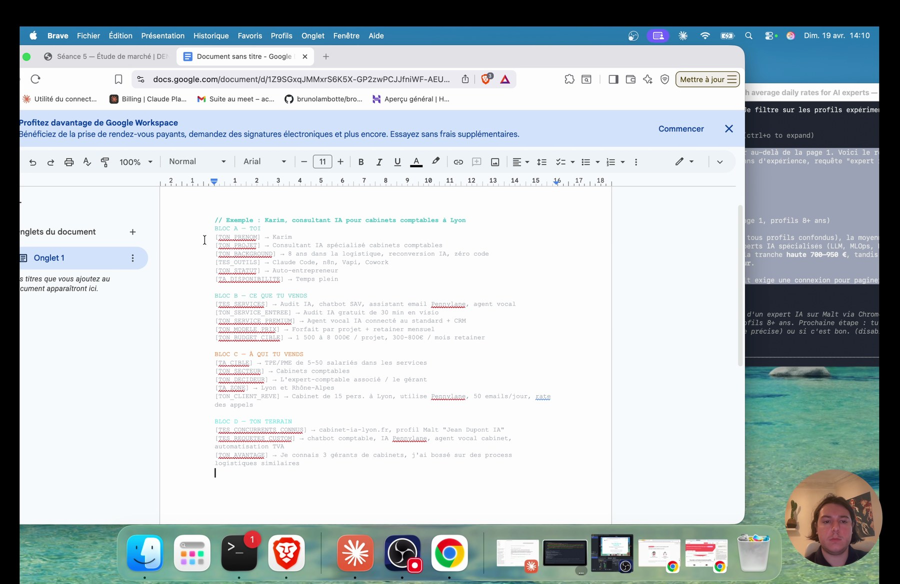
01 / Faire
Ecris simplement : pas besoin d'etre impressionnant, il faut etre clair.
02 / Controler
Claude peut relier ton experience a un angle de marche.
03 / Eviter
Ne minimise pas un ancien metier. Une experience terrain peut devenir un avantage.
Le projet : freelance ou agence
Signal
Le mot que tu choisis change l'etude.
Histoire
Dans la demo, l'objectif devient agence IA. Une agence peut viser des problemes plus gros, des budgets plus hauts et un positionnement plus rassurant pour certaines entreprises.
01 / Faire
Choisis le format qui correspond a ton ambition commerciale.
02 / Controler
Le positionnement final n'est pas contradictoire avec ton projet.
03 / Eviter
Ne choisis pas agence juste pour faire joli si tu vends seul sans process.
Le background comme avantage
Ton passe professionnel peut devenir une preuve.
Si tu connais la logistique, la restauration, la compta ou le SAV, tu comprends deja les irritants. Ce savoir terrain peut valoir autant qu'une competence technique.
01 / Faire
Note les secteurs que tu connais, meme un peu.
02 / Controler
L'etude reutilise ton background dans le pourquoi moi.
03 / Eviter
Ne te presente pas comme pur technicien si ton avantage est la connaissance metier.
Les outils cadrent les services possibles.
Liste les outils utiles, pas ceux que tu as vus une fois par curiosite.
Noeud central
Les outils que tu sais utiliser
Les services proposes peuvent etre produits avec tes outils.
Ne promets pas un service premium que tu ne sais pas encore livrer.
Claude Code, n8n, Vapi, Codex, Cowork, CRM, HubSpot, Pipedrive ou un outil metier : tout ce que tu sais manipuler aide Claude a proposer des offres realistes.
Bloc B : ce que tu vends
Ce bloc definit ton offre de depart.
Ce qui se passe dans la video
Audit IA, chatbot SAV, assistant email, agent vocal, automatisation CRM : le but est de donner assez de matiere pour que Claude cherche des concurrents comparables.
01 / Faire
Mets 3 a 6 services maximum pour rester lisible.
02 / Controler
Les recherches Google utilisent ces services.
03 / Eviter
Ne mets pas vingt services sans priorite : Claude va diluer l'analyse.
Service d'entree
L'offre d'entree sert a ouvrir la conversation.
Carnet de terrain
Dans la demo, l'audit gratuit ou l'audit de 30 minutes en visio est un bon point d'entree. Il permet de comprendre le probleme client et de vendre ensuite une solution plus chiffrable.
Definis ce que le prospect recoit exactement a la fin de l'audit.
Le service d'entree cree une suite logique vers le premium.
Ne fais pas un audit gratuit qui donne tout sans prochaine etape.
Service premium et ROI
Le premium doit etre relie a une economie ou a un gain clair.
La video donne l'exemple d'un outil qui remplace des heures de travail : si le client economise beaucoup plus que ton prix, 5 000 ou 8 000 euros deviennent defendables.
Exprime ton prix avec le gain attendu : temps economise, leads recuperes, appels non perdus.
Le client comprend pourquoi le prix est rationnel.
Ne vends pas de la tech. Vends le probleme resolu.
Bloc C : a qui tu vends
Signal
La cible donne la direction de toutes les recherches.
Histoire
Dans l'exemple, le secteur bascule vers la restauration. Cela change les mots-cles, les concurrents, les douleurs, les plateformes et les arguments.
01 / Faire
Choisis un secteur et un decideur concret.
02 / Controler
Tu peux citer le decideur sans hesiter.
03 / Eviter
Ne reste pas sur TPE/PME services si tu peux etre plus precis.
Bloc D : ton terrain
Ce bloc dit ce que tu sais deja.
Concurrents connus, requetes custom, avantage perso : si tu n'as rien, ce n'est pas grave, mais donne au moins une hypothese. Claude pourra enrichir et corriger.
01 / Faire
Ajoute les concurrents que tu connais, meme si tu n'es pas sur.
02 / Controler
Claude part d'une base plus proche de ton marche.
03 / Eviter
Ne mens pas sur ton avantage. Un petit avantage vrai vaut mieux qu'une grande phrase creuse.
Coller le prompt maitre
Une fois les variables pretes, tu colles le prompt long dans Claude Code.
Le prompt n'est pas court parce qu'il ne demande pas un simple resume. Il demande une methode, des sources, une gestion du contexte, des blocages et trois livrables.
Support technique
Lis le geste avant de le reproduire.
Ce bloc garde le cote terrain : ce que tu observes, ce que tu fais, ce que tu verifies, puis le piege a eviter.
01 / Faire
Colle le prompt complet, puis colle tes blocs A, B, C et D remplis.
02 / Controler
Claude demarre l'espace de travail et l'etape 1.
03 / Eviter
Ne coupe pas le prompt pour gagner du temps : tu risques de casser la methode.
BLOC A — TOI
[TON_PRENOM] → Baptiste Fort
[TON_PROJET] → AGENCE IA
[TON_BACKGROUND] → j’ai travaillé dans une agence seo pendant 2 ans
[TES_OUTILS] → Claude Code, n8n, codex, Cowork
[TON_STATUT] → Auto-entrepreneur
[TA_DISPONIBILITE] → Temps plein
BLOC B — CE QUE TU VENDS
[TES_SERVICES] → Audit IA, chatbot SAV, assistant email IA, agent vocal IA
[TON_SERVICE_ENTREE] → Audit IA gratuit de 30 min en visio
[TON_SERVICE_PREMIUM] → Agent vocal IA connecté au standard + CRM
[TON_MODELE_PRIX] → Forfait par projet + maintenance mensuel
[TON_BUDGET_CIBLE] → 5 000 à 8 000€ / projet, 300-400€ / mois maintenance
BLOC C — À QUI TU VENDS
[TA_CIBLE] → TPE/PME de 5-50 salariés dans les services
[TON_SECTEUR] → Restauration
[TON_DECIDEUR] → le gérant du restaurant
[TA_ZONE] → France
[TON_CLIENT_REVE] → Une chaîne de restauration
BLOC D — TON TERRAIN
[TES_CONCURRENTS_CONNUS] → je sais pas
[TES_REQUETES_CUSTOM] → je sais pas
[TON_AVANTAGE] → J’ai work 2 mois dans la restauration ( serveur )# ==========================================================
# PROMPT - Etude de marche complete en 7 etapes enchainees
# ==========================================================
# ----------------------------------------------------------
# MODE AUTONOMIE TOTALE - regle n°1 absolue
# ----------------------------------------------------------
1. Des la reception de ce prompt, tu demarres IMMEDIATEMENT.
Tu ne me demandes AUCUNE validation, AUCUNE confirmation, AUCUNE precision.
Pas de "veux-tu que je continue ?", pas de "est-ce que c'est ok ?".
Tu enchaines les 7 etapes en totale autonomie jusqu'a la fin.
2. Tu me notifies UNIQUEMENT a la fin, quand les 3 livrables sont generes :
"✓ Etude terminee. Fichiers : etude-marche.md | .xlsx | .html"
3. Pendant que tu travailles, tu montres ton raisonnement et Chrome qui navigue,
mais tu ne t'arretes JAMAIS pour attendre ma reponse. Tu avances.
4. Exception unique : si les outils Chrome ne sont pas dispo au demarrage,
STOP et dis-le. Dans tous les autres cas : tu continues seul.
# ----------------------------------------------------------
# REGLE CHROME - extension obligatoire
# ----------------------------------------------------------
- Tu utilises UNIQUEMENT l'extension Chrome (outils mcp__claude-in-chrome__*).
- INTERDIT : WebSearch, WebFetch, requetes HTTP directes.
- Je dois VOIR Chrome bouger : onglets qui s'ouvrent, pages qui chargent, clics.
# ----------------------------------------------------------
# GESTION DU CONTEXTE - pour ne PAS etre tronque
# (obligatoire - sinon tu perds tout avant l'etape 7)
# ----------------------------------------------------------
A) WRITE-THEN-DISCARD (regle centrale)
Apres CHAQUE page visitee : tu extrais les donnees structurees, tu les
APPEND immediatement dans le bon fichier scratch sur disque, PUIS tu
oublies le contenu brut. Le HTML, les avis bruts, le markup = poubelle.
Seul reste en memoire : 1 ligne de resume + le compteur (ex : "12/50 done").
B) SUB-AGENTS PAR ETAPE (Task tool)
Chaque etape 1 a 6 est deleguee a un sub-agent via l'outil Task.
Le sub-agent a son propre contexte frais, fait son boulot, ecrit ses
fichiers scratch + sa section dans etude-marche.md, et te rend un resume
de 10 lignes max. Tu (agent principal) ne vois jamais les 400 pages :
tu vois 6 resumes courts. Etape 7 (assemblage final), tu la fais toi.
C) FICHIERS SCRATCH PAR BATCH
Cree des le debut un dossier scratch/. Ecris scratch/concurrent-01.md,
scratch/concurrent-02.md, scratch/motcle-01.md, scratch/freelance-01.md, etc.
Un fichier par entite. A l'etape 7, tu lis ces fichiers depuis le disque
(pas depuis ta memoire) pour generer le .xlsx et le .html.
D) BATCHING + CHECKPOINTS
Traite par lot de 10. Apres chaque lot :
1. Confirme l'ecriture disque.
2. Vide ton contexte de travail (garde juste "lot X/5 termine").
3. Passe au lot suivant.
Jamais plus de 10 entites en memoire a la fois.
# ----------------------------------------------------------
# GESTION DES BLOCAGES - tu ne restes JAMAIS coince
# ----------------------------------------------------------
- Login requis (LinkedIn, Malt page 2+, etc.) : skip la source, note dans
le .md "donnees partielles (login requis)", et continue.
- Captcha detecte : note "captcha - a resoudre manuellement [URL]",
skip cette entite, continue avec la suivante. Tu me listes les captchas
restants a la fin, je les ferai en un coup.
- Timeout 15s par page : si ca ne charge pas, skip et note "timeout [URL]".
- Erreur 403/404/Cloudflare : skip + note, ne tente pas 3 fois.
- Donnees manquantes (ex : prix non affiche) : note "N/A" et passe.
REGLE D'OR : toujours continuer. Un blocage = 1 ligne dans le .md, puis on avance.
# ----------------------------------------------------------
# MES 18 VARIABLES - 4 blocs
# ----------------------------------------------------------
# Bloc A - Toi
Prenom : [TON_PRENOM]
Projet : [TON_PROJET]
Background : [TON_BACKGROUND]
Outils : [TES_OUTILS]
Statut : [TON_STATUT]
Disponibilite : [TA_DISPONIBILITE]
# Bloc B - Ce que tu vends
Services : [TES_SERVICES]
Service d'entree : [TON_SERVICE_ENTREE]
Service premium : [TON_SERVICE_PREMIUM]
Modele de prix : [TON_MODELE_PRIX]
Budget cible : [TON_BUDGET_CIBLE]
# Bloc C - A qui tu vends
Cible : [TA_CIBLE]
Secteur : [TON_SECTEUR]
Decideur : [TON_DECIDEUR]
Zone : [TA_ZONE]
Client reve : [TON_CLIENT_REVE]
# Bloc D - Ton terrain
Concurrents connus : [TES_CONCURRENTS_CONNUS]
Requetes custom : [TES_REQUETES_CUSTOM]
Avantage : [TON_AVANTAGE]
# ----------------------------------------------------------
# MISSION - tu enchaines les 7 etapes sans t'arreter
# ----------------------------------------------------------
Cree un fichier etude-marche.md des le debut et enrichis-le a chaque etape.
A la fin des 7 etapes, genere etude-marche.xlsx (5 onglets) et etude-marche.html.
# ----------------------------------------------------------
# ETAPE 1/7 - ANALYSE CONCURRENTIELLE (50 concurrents)
# ----------------------------------------------------------
Ouvre google.fr DANS Chrome. Cherche les 50 premiers resultats pertinents
en combinant ces requetes :
- "[TON_PROJET] [TA_ZONE]"
- "consultant IA [TON_SECTEUR] [TA_ZONE]"
- "automatisation IA [TON_SECTEUR]"
- "expert IA freelance [TA_ZONE]"
- [TES_REQUETES_CUSTOM]
Pour CHACUN des 50 concurrents, ouvre son site dans un onglet Chrome et extrais :
- Nom, URL, services connus, prix (ou "non affiche"), positionnement en 1 phrase
- Note Google Maps + nombre d'avis (ouvre Google Maps DANS Chrome)
- 5 derniers avis Google (positifs ET negatifs)
- Forces / faiblesses
- Presence LinkedIn : abonnes, frequence de posts, dernier post engage (DANS Chrome)
Pour chaque concurrent, interroge l'API Sirene : SIREN, date creation, effectif, code NAF.
Si Pappers dispo : CA dernier exercice, resultat net, statut juridique.
Ecris dans etude-marche.md section "## 1. Analyse concurrentielle" :
- Tableau des 50 concurrents (toutes les colonnes ci-dessus)
- Tendances : ce que TOUS font vs ce que PERSONNE ne fait
- Top 5 concurrents dangereux + pourquoi
- Top 5 concurrents faibles + comment les depasser
# ----------------------------------------------------------
# ETAPE 2/7 - ANALYSE DE LA DEMANDE
# ----------------------------------------------------------
Toujours DANS Chrome.
a) Mots-cles Google : cherche sur google.fr les mots-cles lies a [TES_SERVICES]
dans le contexte de [TON_SECTEUR]. Pour chaque mot-cle : nombre de resultats,
qualite des resultats existants (bonne/moyenne/faible), niveau d'opportunite (1-5).
Minimum 50 mots-cles.
b) "People Also Ask" : pour chaque recherche Google, note les questions du bloc
"Autres questions posees". Minimum 30 questions - celles que [TON_DECIDEUR] se pose.
c) Reddit + forums : cherche "site:reddit.com [TON_SECTEUR] IA automatisation"
+ forums metier. Quels problemes ? Quelles solutions cherchees ?
d) LinkedIn : cherche les posts les plus engages sur "IA pour [TON_SECTEUR]",
"automatisation [TON_SECTEUR]", [TES_REQUETES_CUSTOM]. Minimum 20 posts.
Note likes/commentaires, sujets qui marchent vs ceux qui marchent pas.
Ecris dans etude-marche.md section "## 2. Analyse de la demande" :
- Top 50 mots-cles + niveau concurrence + score opportunite
- Top 30 questions frequentes
- Top 20 sujets LinkedIn engageants
- Les trous : ce que les gens cherchent mais ne trouvent pas
# ----------------------------------------------------------
# ETAPE 3/7 - BENCHMARK PLATEFORMES FREELANCE
# ----------------------------------------------------------
Toujours DANS Chrome. Analyse 50 profils au total repartis :
- malt.fr : 20 profils (clique sur chacun dans Chrome)
- comeup.com : 15 profils (clique sur chacun)
- codeur.com : 10 profils (clique sur chacun)
- upwork.com : 5 profils si pertinent pour [TA_ZONE]
Pour chaque profil, extrais :
- TJM (tarif journalier moyen)
- Services proposes
- Note + nombre de missions
- Ce qui manque dans leur offre
- Leur positionnement en 1 phrase
Ecris dans etude-marche.md section "## 3. Benchmark plateformes" :
- Tableau comparatif par plateforme (nb freelances, TJM moyen, services top-vendus)
- Services les plus demandes vs les moins proposes
- Fourchettes de prix REELLES du marche
- Recommandation : quels prix afficher par rapport au marche
# ----------------------------------------------------------
# ETAPE 4/7 - PROFIL CLIENT IDEAL
# ----------------------------------------------------------
A partir des etapes 1, 2, 3. Verifie 20 profils LinkedIn de [TON_DECIDEUR]
dans [TA_ZONE] DANS Chrome. Cherche 10 lieux (associations pro, evenements,
groupes, meetups) sur Google DANS Chrome.
Ecris dans etude-marche.md section "## 4. Profil client ideal" :
- 2-3 secteurs prioritaires + justification (en partant de [TON_SECTEUR])
- Taille d'entreprise ideale (salaries, CA approximatif)
- Le decideur : titre, quotidien, frustrations, ce qui l'empeche de dormir
- Ses 5 plus gros problemes que l'IA peut resoudre (classes par urgence)
- Budget probable pour des services IA (base sur etape 3)
- Ou le trouver : LinkedIn (profils types), Google, evenements, associations
- Ce qui le convaincrait de bosser avec MOI (utilise [TON_BACKGROUND] + [TON_AVANTAGE])
- Message LinkedIn en 2 versions (courte + longue) qui le ferait repondre
# ----------------------------------------------------------
# ETAPE 5/7 - TROUS DANS LE MARCHE
# ----------------------------------------------------------
Croise TOUTES les analyses precedentes (etapes 1 a 4). Identifie 15 trous minimum.
Pour CHAQUE trou : retourne DANS Chrome, tape la requete correspondante sur Google,
ouvre les 5 premiers resultats. Un trou n'est valide QUE si tu l'as verifie dans Chrome -
sinon c'est une supposition et ca ne compte pas.
15 trous x 5 verifications = 75 onglets Chrome minimum.
Analyse ces 5 dimensions :
1. Ce que TOUS les concurrents font : standard a proposer
2. Ce qu'ils font MAL : ou etre meilleur
3. Ce que PERSONNE ne fait : differenciation
4. Ce que les clients demandent (etape 2) mais ne trouvent pas : opportunite max
5. Segments de [TON_SECTEUR] ignores par les concurrents : niche
Pour chaque trou :
- Service a creer avec [TES_OUTILS]
- Prix a facturer (base sur etape 3)
- Argument de vente en 1 phrase pour [TON_DECIDEUR]
- Difficulte technique (facile / moyen / avance) avec mes outils
- Score opportunite x faisabilite (1-10)
Classe du plus grand au plus petit. Ecris dans etude-marche.md section "## 5. Trous dans le marche".
# ----------------------------------------------------------
# ETAPE 6/7 - POSITIONNEMENT FINAL
# ----------------------------------------------------------
Reverifie DANS Chrome les prix des 10 concurrents les plus pertinents (etape 1)
et des 10 profils freelance les plus proches (etape 3) AVANT de fixer mes prix.
Reverifie DANS Chrome les 10 mots-cles SEO finaux en tapant chacun sur Google.
Ecris dans etude-marche.md section "## 6. Positionnement final" :
1. MON POSITIONNEMENT
- Ma phrase de positionnement (1 phrase percutante : ce que je fais, pour qui)
- 3 differenciateurs (bases sur les trous etape 5)
- "Pourquoi moi" en 3 phrases (utilise [TON_BACKGROUND] + [TON_AVANTAGE])
2. MON OFFRE
- Services avec description courte + prix
- Grille tarifaire complete (basee sur etape 3)
- Service d'entree : comment je le presente, pourquoi gratuit/pas cher
- Service premium : comment je le vends apres l'entree, le ROI client
- Retainer mensuel : ce que je facture, pourquoi
3. MA CIBLE
- Resume du profil client ideal (etape 4)
- 5 problemes que je resous, classes par impact
- Arguments qui convertissent [TON_DECIDEUR]
- Message LinkedIn prospection (version courte + longue)
4. MES MOTS-CLES
- Top 10 mots-cles SEO : blog (seance 9)
- Top 5 sujets LinkedIn : posts (seance 12)
- Top 3 angles prospection : messages (seance 15)
- Top 3 lead magnets : tunnel (seance 11)
5. PLAN D'ACTION CETTE SEMAINE
- 5 premieres actions concretes
- Ce que je dois avoir pret avant la seance 6
# ----------------------------------------------------------
# ETAPE 7/7 - LES 3 LIVRABLES FINAUX
# ----------------------------------------------------------
Tu as rempli etude-marche.md en 6 sections. Maintenant genere les 2 livrables manquants.
# 7.1 - etude-marche.xlsx (Excel, 5 ONGLETS, DESIGN SOIGNE)
Cree un script Python avec openpyxl et execute-le. Design obligatoire :
- Header ligne 1 : fond #272B5C, texte blanc, gras, centre, hauteur 28px
- Lignes alternees : blanc / #f4f7fb
- Bordures fines grises (#e8edf2) sur toutes les cellules
- Colonnes auto-width selon contenu
- Freeze pane sur la ligne d'en-tete
- Accent couleur #4CC0C0 pour les valeurs-cles
Onglet 1 - "Concurrents" (50 lignes de donnees)
Colonnes : Nom | URL | Services | Prix | Google * | Nb avis | SIREN | Date creation | Effectif | NAF | CA | Resultat net | LinkedIn abonnes | Frequence posts | Forces | Faiblesses | Dangerosite (1-5)
Onglet 2 - "Demande" (3 blocs)
Bloc A (50 lignes) : Mot-cle | Volume estime | Concurrence | Qualite existante | Score opportunite (1-5)
Bloc B (30 lignes) : Questions People Also Ask
Bloc C (20 lignes) : Sujets LinkedIn engageants | Likes moyens | Commentaires moyens
Onglet 3 - "Plateformes" (50 lignes)
Colonnes : Plateforme | Nom profil | Services | TJM | Note | Nb missions | Ce qui manque | Positionnement
Onglet 4 - "Client & Trous" (2 blocs)
Bloc A : profil client ideal (1 ligne par attribut, 2 colonnes : Attribut | Valeur)
Bloc B (15 lignes) : Trou | Service a creer | Prix | Argument | Difficulte | Score opportunite
Onglet 5 - "Positionnement & Plan" (blocs thematiques)
Phrase de positionnement | 3 differenciateurs | Grille tarifaire complete | Top 10 mots-cles SEO | Top 5 sujets LinkedIn | Top 3 angles prospection | Top 3 lead magnets | Plan semaine (5 actions)
# 7.2 - etude-marche.html (single file, DESIGN PRO)
Transforme etude-marche.md en HTML autonome (tout inline, aucune dependance externe sauf Google Fonts).
Design obligatoire :
- Fond blanc, typographie Inter (Google Fonts), style SaaS moderne
- Navy #272B5C pour les titres, teal #4CC0C0 pour les accents, gris #64748d pour le texte
- Header : "Etude de marche - [TON_PRENOM] - [TON_PROJET]" + date du jour + sommaire cliquable
- Chaque section (## titre) = pleine largeur avec padding genereux
- Tableaux HTML styles : hover sur les lignes, header colore navy
- Listes = cartes avec icones ou puces stylees
- Chiffres-cles mis en avant avec la couleur accent teal
- Responsive mobile-friendly
- Micro-animations CSS : fade-in au scroll, hover sur les cartes
- Bas de page : recap visuel avec les chiffres-cles
Le resultat doit ressembler a un document de consulting professionnel.
# ----------------------------------------------------------
# LIVRABLES FINAUX a la fin du run
# ----------------------------------------------------------
- etude-marche.md (500-1000 lignes, 6 sections)
- etude-marche.xlsx (5 onglets styles)
- etude-marche.html (version visuelle pro)
GO. Tu demarres MAINTENANT par l'etape 1/7. Tu ne me poses AUCUNE question.
Tu enchaines les 7 etapes seul, en autonomie totale. Montre-moi ton raisonnement
et Chrome qui navigue au fil de l'eau, mais ne t'arrete jamais pour me demander
quoi que ce soit. Tu me notifies UNIQUEMENT a la fin avec "✓ Etude terminee"
et la liste des 3 fichiers produits.Je veux que tu fasses une analyse concurrentielle complète pour mon projet : [Agence automatisation IA]. Je cible [PME] dans la zone [France].
Étape 1 : Cherche sur Google les 10 premiers résultats pour ces requêtes :
- "[Agence automatisation IA] [France]"
- "consultant IA PME [Agence automatisation IA]"
- "automatisation IA entreprise [France]"
- "expert IA freelance [France]"
Étape 2 : Pour chaque concurrent trouvé, visite leur site et extrais :
- Nom et URL du site
- Leurs services (liste complète)
- Leurs prix (si affichés)
- Leur positionnement (comment ils se présentent en 1 phrase)
- Leur note Google et nombre d'avis
- Leurs forces (ce qu'ils font bien)
- Leurs faiblesses (ce qui manque, ce qui est mal fait)
- Présence LinkedIn (nombre d'abonnés, fréquence de publication)
Étape 3 : Génère un fichier HTML visuel et propre avec :
- Un tableau comparatif de tous les concurrents
- Un résumé des tendances (ce que tout le monde fait, ce que personne ne fait)
- Les opportunités identifiées
Crée un fichier etude-marche.md et écris dedans une section "## 1. Analyse concurrentielle" avec le tableau + résumé.1. Copier le prompt maitre
2. Coller les 18 variables remplies
3. Envoyer dans Claude Code lance avec ChromeMode autonomie totale
Le prompt dit a Claude de ne pas demander de validation a chaque etape.
Ce qui se passe dans la video
C'est important parce que l'etude dure longtemps. Si Claude demande je continue ? tous les dix profils, tu perds l'interet de l'automatisation.
01 / Faire
Utilise cette autonomie quand le cadre est clair.
02 / Controler
Claude avance jusqu'aux trois livrables.
03 / Eviter
Ne mets pas autonomie totale si les variables sont mal remplies ou sensibles.
Chrome obligatoire
Le prompt interdit WebSearch et WebFetch.
Carnet de terrain
Le formateur insiste : Claude Code peut parfois choisir une solution plus simple. Ici, on veut voir Chrome bouger pour verifier la recherche et les sources.
Ecris explicitement que les recherches doivent passer par Chrome visible.
Les onglets s'ouvrent et les pages se chargent.
Ne laisse pas Claude inventer une etude depuis sa memoire.
Write then discard
La regle evite de saturer le contexte.
Apres chaque page, Claude extrait les donnees utiles, les ecrit sur disque, puis oublie le brut. Sinon, 400 pages finissent par remplir le contexte et l'etape 7 devient fragile.
Demande un dossier scratch/ et une ecriture progressive.
Les fichiers scratch apparaissent pendant le run.
Ne garde pas le HTML complet des pages en memoire.
Sub-agents par etape
Signal
Chaque grande etape peut etre confiee a un agent separe.
Histoire
Le sub-agent travaille avec son propre contexte, ecrit ses donnees, puis rend un resume court. L'agent principal garde la vision globale sans porter tous les details.
01 / Faire
Demande un sub-agent pour les etapes 1 a 6.
02 / Controler
Tu obtiens des resumés courts et des fichiers sur disque.
03 / Eviter
Ne fais pas porter 50 concurrents, 50 mots-cles et 50 profils au meme contexte.
Batching par lots de 10
Le lotissement rend le travail plus robuste.
Traiter 10 concurrents, ecrire, nettoyer, puis continuer est beaucoup plus fiable que de tout garder en vrac.
01 / Faire
Demande un checkpoint apres chaque lot de 10.
02 / Controler
Tu sais ou Claude en est : 10/50, 20/50, etc.
03 / Eviter
Ne laisse pas un run long sans points de reprise.
Un blocage ne doit pas arreter l'etude.
Prevois des valeurs N/A, login requis, captcha, timeout.
Noeud central
Gestion des blocages
L'etude se termine meme avec des donnees partielles.
Ne bloque pas toute l'analyse pour une page capricieuse.
Login requis, captcha, timeout, 403, prix absent : la bonne reaction est de noter, passer et continuer. A la fin, tu peux revenir sur les trous.
Lancer et observer les premieres minutes
Le debut du run confirme que la methode est bien comprise.
Ce qui se passe dans la video
Dans la video, Claude cree l'espace de travail, lance etude-marche.md, appelle Chrome, puis commence l'analyse concurrentielle.
01 / Faire
Regarde les premieres recherches et les premiers fichiers crees.
02 / Controler
Les requetes correspondent bien a ton secteur et ta zone.
03 / Eviter
Ne laisse pas tourner 30 minutes si Claude cherche le mauvais marche.
Laisser travailler sans attendre devant
Une fois la direction validee, tu peux reprendre autre chose.
Carnet de terrain
Le formateur explique qu'a terme tu travailleras sur plusieurs terminaux ou projets. Pendant qu'un agent genere, tu peux avancer ailleurs.
Apprends a revenir sur le run aux moments de checkpoint.
Tu gagnes du temps sans perdre le controle.
Ne reste pas passif si tu vois une erreur evidente : corrige vite.
Le prompt comme systeme
Le vrai actif n'est pas seulement le texte du prompt.
Le prompt contient une facon de travailler : sources, verification, batch, fichiers, livrables, amelioration. C'est ce systeme que tu reutiliseras dans d'autres marches.
Garde une copie du prompt et adapte seulement les variables.
Tu peux relancer l'etude sur un autre secteur.
Ne reecris tout a zero a chaque fois.
Etape 1 : analyse concurrentielle
Claude cherche 50 concurrents pertinents.
Il combine projet, zone, secteur, services, requetes custom. Pour chaque concurrent, il ouvre le site, lit l'offre, releve les prix, avis, forces et faiblesses.
Support technique
Lis le geste avant de le reproduire.
Ce bloc garde le cote terrain : ce que tu observes, ce que tu fais, ce que tu verifies, puis le piege a eviter.
01 / Faire
Demande un tableau riche, pas une liste de noms.
02 / Controler
Tu peux distinguer concurrents dangereux et concurrents faibles.
03 / Eviter
Ne melange pas des concurrents hors secteur juste parce qu'ils parlent d'IA.
Etape 1 : verifier les donnees entreprise
Sirene, Pappers et les sources publiques ajoutent de la solidite.
Date de creation, effectif, code NAF, CA, resultat net ou statut juridique donnent une lecture plus factuelle. Un site peut se presenter gros alors que les donnees publiques racontent autre chose.
01 / Faire
Ajoute les colonnes SIREN, effectif, NAF, CA et date de creation.
02 / Controler
Tu peux verifier les promesses des concurrents.
03 / Eviter
Ne prends pas le storytelling d'un site comme preuve.
Claude cherche ce que les clients formulent deja.
Demande le score d'opportunite pour chaque mot-cle.
Noeud central
Etape 2 : analyse de la demande
Les futurs contenus SEO et LinkedIn sortent de cette etape.
Ne choisis pas tes mots-cles au feeling.
Mots-cles, People Also Ask, forums, Reddit, LinkedIn : l'objectif est de capter les douleurs et les formulations naturelles.
Etape 2 : transformer les questions en contenus
Chaque question frequente peut devenir un article ou un post.
Ce qui se passe dans la video
Si un restaurateur cherche comment automatiser les reservations, les avis ou les appels perdus, c'est une piste de contenu et d'offre.
01 / Faire
Relie chaque question a un angle commercial.
02 / Controler
Tu sais quels sujets expliquer dans les seances suivantes.
03 / Eviter
Ne separe pas recherche de marche et contenu : ils doivent se nourrir.
Etape 3 : plateformes freelance
Les plateformes donnent le prix du marche visible.
Carnet de terrain
Malt montre des TJM, ComeUp montre des offres plus packagées, Codeur montre des demandes et budgets. Ensemble, elles donnent une fourchette.
Compare les profils similaires a ton positionnement.
Tu peux justifier ton prix par rapport aux alternatives.
Ne te laisse pas tirer vers le bas par les plateformes low cost.
Etape 3 : ce qui manque dans les offres
Le benchmark sert surtout a reperer les absences.
Si beaucoup vendent un chatbot generique mais personne ne vend un pack restaurant avec ROI, suivi et integration locale, tu tiens peut-etre un angle.
Ajoute une colonne Ce qui manque.
Le positionnement final s'appuie sur des manques observes.
Ne copie pas les offres existantes sans ajouter un angle.
Etape 4 : client ideal
Signal
Les trois premieres etapes nourrissent le persona.
Histoire
Claude ne doit pas inventer le client ideal au debut. Il doit le deduire des concurrents, de la demande et des prix.
01 / Faire
Demande deux ou trois cibles prioritaires avec justification.
02 / Controler
Le persona est relie aux donnees precedentes.
03 / Eviter
Ne cree pas un avatar marketing de surface.
Etape 4 : ou trouver le client
Une cible utile indique aussi les lieux de prospection.
Associations professionnelles, evenements, groupes, LinkedIn, Google Maps : tu dois savoir ou aller chercher les decideurs apres la seance.
01 / Faire
Liste 10 lieux ou canaux concrets.
02 / Controler
Tu peux preparer la prospection avec des sources reelles.
03 / Eviter
Ne dis pas sur LinkedIn sans profils types ni requetes.
Etape 5 : trous du marche
Claude croise les etapes 1 a 4 pour trouver les opportunites.
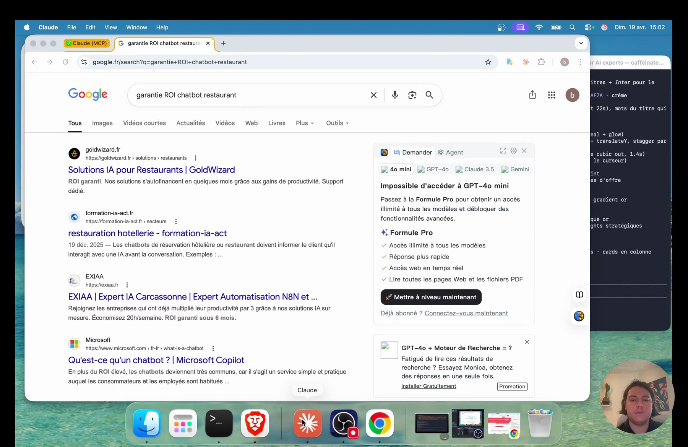
Lecture
Un trou peut etre un service absent, une promesse non prouvee, un segment ignore, un prix opaque ou un livrable que personne ne propose.
A faire
Demande au moins 15 trous, puis une verification Google pour chacun.
Controle
Chaque trou a un score opportunite/faisabilite.
Erreur
Ne valide pas un trou non verifie.
Etape 6 : positionnement
Le positionnement rassemble le marche, la cible, l'offre et le prix.
Ce qui se passe dans la video
Claude doit revérifier les prix et mots-cles avant de conclure. Ensuite il propose phrase, differenciateurs, offre, cible, contenus et plan d'action.
01 / Faire
Demande une phrase courte qui peut tenir dans un hero de site.
02 / Controler
Tu sais dire en 10 secondes ce que tu vends.
03 / Eviter
Ne garde pas un positionnement qui demande 5 minutes d'explication.
Etape 7 : generer les trois livrables
La derniere etape transforme les donnees en fichiers utilisables.
Claude consolide le .md, cree le .xlsx avec openpyxl, puis genere un HTML visuel. C'est la partie ou le travail de recherche devient un support concret.
Support technique
Lis le geste avant de le reproduire.
Ce bloc garde le cote terrain : ce que tu observes, ce que tu fais, ce que tu verifies, puis le piege a eviter.
01 / Faire
Verifie que les trois fichiers sont bien annonces a la fin.
02 / Controler
Tu peux ouvrir chaque livrable.
03 / Eviter
Ne considere pas l'etude terminee tant que les fichiers ne sont pas presents.
Lire le fichier Markdown
Le .md est le document maitre.
Il contient les sections longues, les tableaux, les sources, les raisonnements et les notes de blocage. C'est lui que tu corriges avant de regenerer le reste.
Ouvre etude-marche.md et lis les titres principaux.
La logique de l'etude est comprehensible sans le HTML.
Ne corrige pas seulement le visuel si le fond est faux.
Importer le XLSX dans Google Sheets
Le tableur sert a verifier vite.
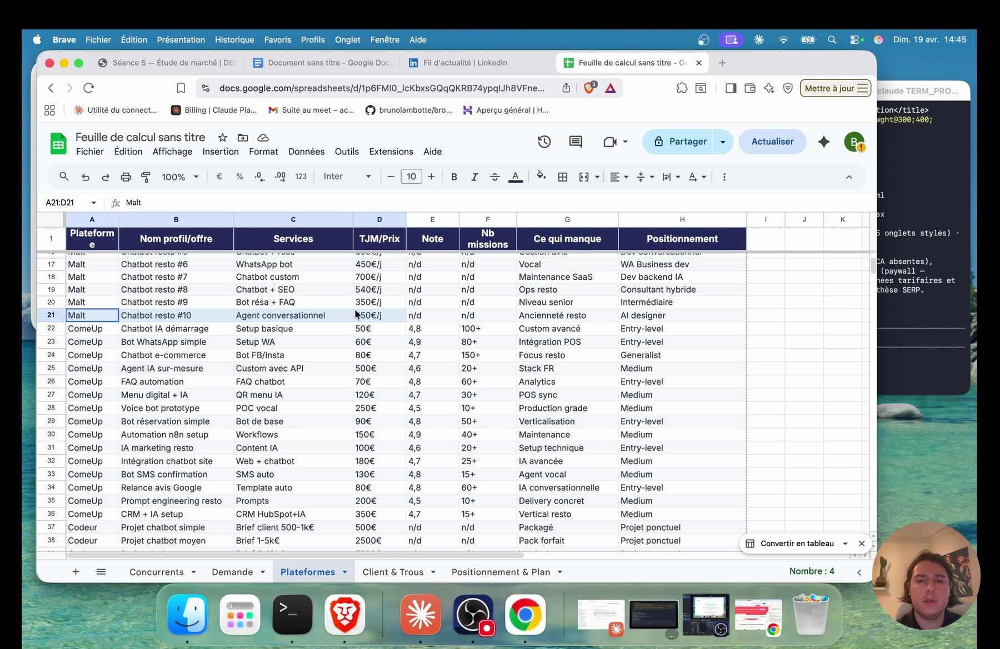
Lecture
Dans la video, le formateur ouvre Google Sheets, importe le fichier, puis inspecte les onglets : concurrents, demande, plateformes, client et trous, positionnement.
A faire
Importe le .xlsx et verifie les onglets.
Controle
Les colonnes importantes sont lisibles et filtrables.
Erreur
Ne laisse pas un tableur avec des colonnes vides sans demander une correction.
Onglet concurrents
C'est l'onglet pour juger ton terrain.
Tu dois voir les offres, les prix, les forces, les faiblesses, les donnees publiques et la dangerosite. S'il manque SIREN ou CA, tu peux relancer une correction ciblee.
01 / Faire
Trie les lignes par dangerosite ou par prix.
02 / Controler
Tu identifies les 5 concurrents les plus dangereux.
03 / Eviter
Ne garde pas des concurrents non pertinents pour gonfler le chiffre.
Cet onglet nourrit ton contenu.
Marque les mots-cles qui collent vraiment a ton offre.
Noeud central
Onglet demande
Tu as une liste d'idees de contenu directement actionnable.
Ne choisis pas un mot-cle uniquement parce qu'il semble populaire.
Les mots-cles, questions et sujets LinkedIn deviennent les articles, posts et angles d'accroche des prochaines seances.
Onglet plateformes
Cet onglet aide a fixer les prix.
Ce qui se passe dans la video
Tu compares TJM, packs, notes et positionnements. Les plateformes montrent ce que les clients voient quand ils cherchent un prestataire.
01 / Faire
Repere le bas, le milieu et le haut de marche.
02 / Controler
Ta grille tarifaire a une base concrete.
03 / Eviter
Ne facture pas au hasard ou par comparaison avec un salaire.
Onglet client et trous
C'est l'onglet le plus strategique.
Carnet de terrain
Il relie la personne qui achete avec les opportunites non couvertes. Tu peux y trouver tes lead magnets, tes offres et tes arguments de vente.
Lis les trous du marche un par un et supprime ceux qui ne te parlent pas.
Il reste quelques opportunites fortes et realistes.
Ne garde pas 15 idees si seulement 3 sont vendables.
Onglet positionnement et plan
Cet onglet transforme l'etude en plan de semaine.
Phrase de positionnement, prix, mots-cles, sujets LinkedIn, angles de prospection, lead magnets et actions : c'est la passerelle vers les seances suivantes.
Choisis 5 actions a faire avant de continuer.
Tu sais quoi faire cette semaine.
Ne termine pas la seance sans action concrète.
Ouvrir le HTML
Le HTML est la version presentable.
Lecture
Dans la video, Claude genere un premier HTML, puis le formateur demande une amelioration du design. Le but est d'avoir un document que tu peux consulter, montrer ou reutiliser.
A faire
Ouvre etude-marche.html dans Chrome.
Controle
Le document est lisible, responsive et donne envie d'etre lu.
Erreur
Ne confonds pas beau design et bonne etude : les deux doivent tenir.
Ameliorer un livrable cible
Le premier resultat peut etre bon sans etre final.
Le formateur demande de completer des colonnes manquantes et de retravailler le design. C'est normal : l'IA donne une base, puis tu raffines.
01 / Faire
Donne une demande precise : quelle colonne, quel fichier, quel resultat attendu.
02 / Controler
Le nouveau fichier corrige le probleme observe.
03 / Eviter
Ne dis pas seulement ameliore. Dis ce qui manque et ce que tu veux.
Completer les donnees manquantes
Si les colonnes SIREN, CA ou effectif sont vides, tu peux relancer une recherche ciblee.
Demande a Claude de reprendre uniquement les entreprises concernees, de chercher dans les sources publiques, puis de regenerer le fichier.
Support technique
Lis le geste avant de le reproduire.
Ce bloc garde le cote terrain : ce que tu observes, ce que tu fais, ce que tu verifies, puis le piege a eviter.
01 / Faire
Travaille par bloc : concurrents manquants, donnees publiques, puis export.
02 / Controler
Le tableur remplace les N/A quand la source existe.
03 / Eviter
Ne relance pas toute l'etude pour un probleme de 10 colonnes.
Reprends le XLSX et complete les colonnes SIREN, date de creation, effectif et CA pour les concurrents quand l'information existe. Regénere uniquement le fichier xlsx.Verifier les concurrents dangereux
Le top 5 des concurrents sert a savoir qui surveiller.
Ce qui se passe dans la video
Ouvre leurs sites, regarde leurs offres et demande a Claude de remettre les liens directs si certains noms sont flous.
01 / Faire
Ajoute une colonne URL verifiee si necessaire.
02 / Controler
Tu peux ouvrir chaque concurrent sans chercher a nouveau.
03 / Eviter
Ne garde pas un concurrent dangereux sans lien ou sans preuve.
Transformer les problemes en promesses
Le client ne veut pas de technologie, il veut un resultat.
Carnet de terrain
Dans la video, le formateur rappelle qu'un gerant se fiche de la tech : il veut du temps gagne, des appels recuperes, des avis mieux geres, des demandes traitees.
Reformule tes services avec un resultat mesurable.
Chaque service repond a une douleur concrete.
Ne vends pas chatbot IA. Vends moins d'appels perdus ou reservations mieux traitees.
Raffiner le design du HTML
Le design peut etre corrige comme n'importe quel livrable.
Tu peux demander a Claude de rendre le HTML plus professionnel, plus clair, plus consultatif, avec de meilleurs blocs et un meilleur rythme.
Donne des contraintes : couleurs, sections, cartes, tableaux, responsive.
Le design final sert mieux la lecture.
Ne change pas le design au point de cacher les donnees.
Relancer par petites demandes
Signal
Apres le gros prompt, les corrections doivent etre ciblees.
Histoire
Tu peux demander de completer un onglet, verifier un prix, ameliorer le HTML, refaire un tableau ou ajouter des liens. Plus la demande est precise, plus la correction est propre.
01 / Faire
Commence chaque correction par reprends seulement....
02 / Controler
Le fichier modifie correspond au probleme signale.
03 / Eviter
Ne relance pas tout le systeme a chaque petite erreur.
La boucle d'amelioration
La seance se termine sur une logique simple : ameliorer constamment.
Tu peux reprendre l'etude pendant qu'un autre agent construit un site ou un audit. Chaque nouvelle information enrichit ton QG et rend la suite plus precise.
01 / Faire
Ajoute une routine : relire, corriger, regenerer, ranger.
02 / Controler
L'etude devient meilleure au fil de la formation.
03 / Eviter
Ne considere pas l'etude comme un PDF fige.
Connecter l'etude a Cowork
Le dernier geste consiste a donner le contexte a ton QG.
Le formateur ouvre Cowork et demande de parler de l'etude. Si Cowork repond avec le secteur, le positionnement et les livrables, le contexte est bien connecte.
Parle-moi de mon etude de marche STP.01 / Faire
Range les fichiers dans le QG, puis teste avec une question simple.
02 / Controler
Cowork sait resumer l'etude.
03 / Eviter
Ne continue pas la formation avec des fichiers non relies au QG.
Utiliser l'etude en seance 6
La seance suivante organise ton QG autour de ces donnees.
Ce qui se passe dans la video
Ton positionnement, tes offres, tes cibles et tes fichiers deviennent la base de ton organisation. Le QG n'est pas un dossier vide : il porte la memoire du business.
01 / Faire
Prepare les trois fichiers avant la prochaine seance.
02 / Controler
La seance 6 peut s'appuyer sur du contenu reel.
03 / Eviter
Ne range pas l'etude dans un dossier separe du projet principal.
La checklist finale
Avant de fermer la seance, verifie les points essentiels.
Extension installee, Chrome connecte, variables remplies, prompt lance, fichiers generes, tableur verifie, HTML ouvert, corrections notees, QG alimente.
[ ] Extension Claude installee
[ ] Claude Code lance avec Chrome
[ ] 18 variables remplies
[ ] etude-marche.md genere
[ ] etude-marche.xlsx importe dans Sheets
[ ] etude-marche.html ouvert
[ ] Corrections notees
[ ] Fichiers ranges dans le QG01 / Faire
Passe la checklist ligne par ligne.
02 / Controler
Tu sais exactement ce qui est termine et ce qui reste a ameliorer.
03 / Eviter
Ne passe pas a la suite avec un doute sur les fichiers produits.
Le message a retenir
Cette seance transforme Claude Code en assistant de recherche terrain.
Tu ne demandes pas une idee. Tu fais naviguer un agent, tu structures les donnees, tu verifies les resultats, puis tu utilises cette base pour construire ton business.
Reprends l'etude jusqu'a ce qu'elle soit assez claire pour guider ton site et ta prospection.
Tu peux expliquer ton marche sans improviser.
Ne cherche pas la perfection avant d'avancer. Cherche une base solide que tu peux enrichir.